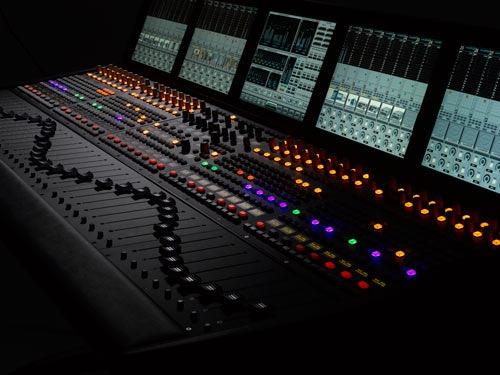

Mix y Mastering
La mezcla consiste en dar vida a la visión del artista, mientras que la masterización se centra en la calidad del sonido y la cohesión general.
Audiofix
Audio Fix es una aplicación que nos permite mejorar y aumentar el sonido de nuestros vídeos de forma sencilla y rápida. Para ello hace uso de una serie de ajustes que nos ofrece en forma de opciones de mejora.

Beatmaking
Podemos generar música mediante el sampleo de grabaciones musicales ya existentes y otras técnicas gracias al desarrollo tecnológico que la industria musical.